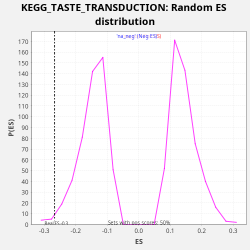

Profile of the Running ES Score & Positions of GeneSet Members on the Rank Ordered List
The same image in compressed SVG format
| Dataset | CCLE |
| Phenotype | NoPhenotypeAvailable |
| Upregulated in class | na_neg |
| GeneSet | KEGG_TASTE_TRANSDUCTION |
| Enrichment Score (ES) | -0.26795375 |
| Normalized Enrichment Score (NES) | -1.8171433 |
| Nominal p-value | 0.016064256 |
| FDR q-value | 0.065629594 |
| FWER p-Value | 0.725 |
| SYMBOL | RANK IN GENE LIST | RANK METRIC SCORE | RUNNING ES | CORE ENRICHMENT | |
|---|---|---|---|---|---|
| 1 | TAS1R3 | 35 | 4.634 | 0.0298 | No |
| 2 | PDE1A | 765 | 0.014 | 0.0305 | No |
| 3 | PRKACB | 3054 | 0.000 | -0.0342 | No |
| 4 | TAS2R31 | 4173 | 0.000 | -0.0498 | No |
| 5 | PRKACA | 5882 | 0.000 | -0.0902 | No |
| 6 | TAS2R14 | 5914 | 0.000 | -0.0602 | No |
| 7 | ITPR3 | 6209 | 0.000 | -0.0413 | No |
| 8 | GNB1 | 7414 | 0.000 | -0.0605 | No |
| 9 | GNG13 | 8984 | 0.000 | -0.0951 | No |
| 10 | TAS1R1 | 10680 | 0.000 | -0.1349 | No |
| 11 | GNG3 | 11052 | -0.000 | -0.1192 | No |
| 12 | TAS2R19 | 11623 | -0.000 | -0.1118 | No |
| 13 | PRKX | 13123 | -0.000 | -0.1434 | No |
| 14 | GNAS | 13770 | -0.000 | -0.1392 | No |
| 15 | ADCY6 | 14654 | -0.000 | -0.1450 | No |
| 16 | CACNA1B | 15980 | -0.000 | -0.1693 | No |
| 17 | TAS2R43 | 18334 | -0.001 | -0.2367 | Yes |
| 18 | KCNB1 | 18479 | -0.001 | -0.2115 | Yes |
| 19 | PLCB2 | 18866 | -0.001 | -0.1964 | Yes |
| 20 | ADCY4 | 19333 | -0.002 | -0.1847 | Yes |
| 21 | TAS2R38 | 20229 | -0.003 | -0.1910 | Yes |
| 22 | CACNA1A | 20325 | -0.004 | -0.1637 | Yes |
| 23 | TAS2R20 | 20486 | -0.004 | -0.1392 | Yes |
| 24 | GRM4 | 20564 | -0.005 | -0.1111 | Yes |
| 25 | TAS2R10 | 20638 | -0.005 | -0.0830 | Yes |
| 26 | SCNN1G | 21939 | -0.028 | -0.1062 | Yes |
| 27 | TAS2R4 | 23103 | -0.401 | -0.1237 | Yes |
| 28 | TAS2R5 | 23123 | -0.431 | -0.0933 | Yes |
| 29 | SCNN1B | 23355 | -1.059 | -0.0717 | Yes |
| 30 | TAS2R3 | 23449 | -1.550 | -0.0443 | Yes |
| 31 | SCNN1A | 23604 | -3.173 | -0.0196 | Yes |
| 32 | GNB3 | 23613 | -3.383 | 0.0114 | Yes |

{kind=link}
{kind=link}